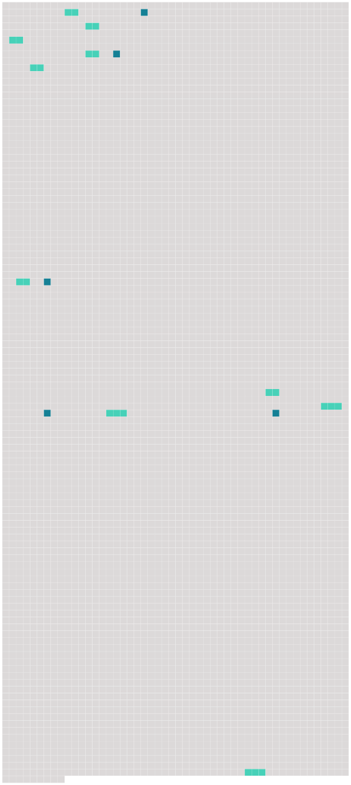

Longueur nb maillons : 15 mentions |
|
La princesse la trouva si jolie, qu’ elle voulut la mener avec elle à la promenade, et tout le monde cherchait à deviner quelle était cette charmante personne que l’ on voyait à la portière de son carrosserie soir, on ne parla que de Mme de Hautefort, et il ne fut pas difficile d’ engager [la reine-mère] , Marie de Médicis, à la prendre parmi [ses] filles d’ honneur. [2 phrases] En 1630, elle suivit [la reine-mère] à Lyon, où le roi était tombé sérieusement malade, pendant que Richelieu était à la tête de l’ armée en Italie. [1 phrases] Louis XIII était l’ homme du monde qui ressemblait le moins à son père Henri IV : il repoussait jusqu’ à l’ idée du moindre dérèglement, et les beautés faciles de la cour de [sa mère] et de sa femme n’ attiraient pas même ses regards ; mais ce cœur mélancolique et chaste avait besoin d’ une affection ou du moins d’ une habitude particulière qui lui tînt lieu de tout le reste et le consolât des ennuis de la royauté. La modestie aussi bien que la beauté de Mlle de Hautefort le touchèrent ; peu la peu il ne put se passer du plaisir de la voir et de s’ entretenir avec elle, et lorsqu’ à son retour de Lyon, après la fameuse journée des dupes, l’ intérêt de l’ état et sa fidélité à Richelieu le forcèrent d’ éloigner [sa mère] , il [lui] ôta la jeune Marie et la donna à la reine Anne, en la priant de l’ aimer et de la bien traiter pour l’ amour de lui. [2 phrases] Elle tenait à Mme du Fargis, qui, comme elle, était du parti de [la reine-mère] , de l’ Espagne et des mécontens, et elle regarda sa nouvelle fille d’ honneur, non-seulement comme une rivale auprès du roi, mais comme une surveillante et une ennemie. [48 phrases] Louis XIII avait deux motifs pour ne pas l’ aimer, l’ un était général et de l’ ordre le plus élevé, celui qui le sépara de [sa mère] , pour [laquelle] il avait une vive tendresse, à savoir l’ intérêt de l’ état, une politique qui ne fléchit jamais et le ramena toujours à Richelieu, bien que les façons altières du cardinal ne lui plussent point et qu’ il lui prît souvent des impatiences et des révoltes qui cédaient bientôt à sa justice et à son patriotisme. [13 phrases] Mettons -nous donc à la place d’ une jeune fille sortie d’ une race féodale, introduite à la cour par [la reine-mère] et jetée à quinze ans dans celle d’ Anne d’ Autriche. [3 phrases] Gracieusement accueillie par [Marie de Médicis] , au bout de quelques mois elle [l’] avait vue exilée, et elle apprenait que [sa première protectrice] , la femme d’ Henri le Grand, la mère de Louis XIII, dont les torts surpassaient son intelligence, [était] réduite à vivre en Belgique des secours de l’ étranger. [63 phrases]
C’ eût été jouer précisément le jeu du cardinal, comme l’ avait fait [Marie de Médicis] ; il fallait rester, tenir tête au péril, et le conjurer à force d’ adresse et de courage. |
 |
Il est possible de télécharger la ressource sur la page Ortolang |
Si vous avez des questions ou vous voyez des erreurs, merci d'envoyer un mail à silvia.federzoni89@gmail.com |